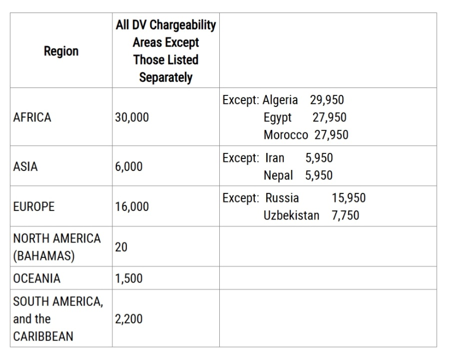

🔥 የሚያዚያ ወር ዲቪ ብሉቲን ተለቀቀ! 🔥
የሚያዚያ ወር ዲቪ ብሉቲን አዲስ ነገር ይዞ መጣ።
ለቃለ መጠይቅ መቅረብ የሚችሉ የአፍሪካ ባለ እድለኞች የዲቪ ኬዝ ቁጥር እስከ 30,000 ከፍ ብሏል።
በሚቀጥሉት 2-3 ሳምንታት ውስጥ የዲቪ ቃለመጠይቅ ቀጠሮ(2NL) ደብዳቤ በኢሜል ይደርሶታል ይከታተሉ።

መልእክት :-
የኬዝ ቁጥራቹ ከ30,000 በታች የሆናቹ አሸናፊዎች ለቃለመጠይቅ የሚያስፈልጉ መረጃዎችና ዶክመንቶች
1. ቢያንስ የ12ኛ ክፍል ሀገር አቀፍ መልቀቂያ ፈተና ሰርተፊኬት(TVET እና TVET+1,+2,+3 ተቀባይነት የላቸውም።)
2. የልደት ሰረተፊኬት (እንግሊዘኛ ካልሆነ መተርጎም አለበት)
3. የፖሊስ አሻራ ሰርተፊኬት።
4. DS-260 ፎርም ( Confirmation and Detailed page)
5. የህክምና ምርመራ
6. ልጆችና ትዳር ካልዎ ከተራ ቁ.1 እና ቁ.3 (ከትዳር አጋሮ ያካትታል) ውጪ ለሁሉም ያስፈልጋል። በተጨማሪም የትዳር ሰርተፍኬት(ይተርጎም)። ፈተው ከሆነ የፍቺ ሰርተፊኬት ግዴታ ነው።
7. የቅድመ ቃለመጠይቅ መመሪያ
ለተጨማሪ ማብራሪያ Home-page እና DV-bulletin ላይ የተዘረዘውን ሁሉንም መረጃ ያንብቡ።